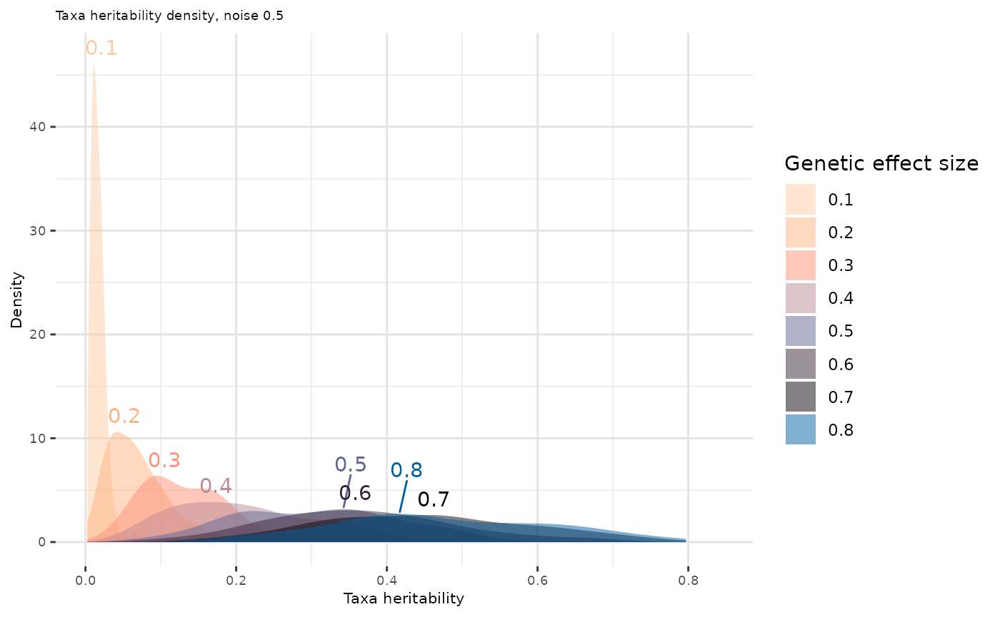

Calibrate simulation parameters
calibrate-simulation-parameters.RmdAfter loading
your own dataset, we recommend performing a quick diagnosis to guide the
choice of parameters in the holo_simu() simulation
framework. This vignette aims to support users in calibrating
simulations so that they better reflect the characteristics of their
data.
We focus here on two parameters that influence the behavior of the simulation:
-
The genetic effect size
,
which shapes the distribution of QTLs effects across microbiome.
Note: The default value of this parameter is optimized to match the
Derudataset, wich sets it to 0.3. -
The multinomial sampling size parameter, used to
perform the multinomial sampling step that converts abundances to counts
data. Note: The default value of this parameter is optimized to
match the
Derudataset, wich sets it to 10,000.
library(magrittr)
library(dplyr)
library(ggplot2)
library(ggrepel)
library(paletteer)
library(data.table)
library(glue)
library(plotly)
library(psych)Calibrating the Genetic Effect Size
The genetic effect size parameter
directly impacts the distribution of taxa heritabilities (Further
explanations are given in Pety et al. (2025)
). The gen_effect_calibration() function allows users to
evaluate how different values of
influence this distribution.
In practice, heritabilities for most taxa are expected to lie around 0.1, rarely exceeding 0.5 as suggested in Zang et al. (2022) .
data(Deru)
ToyData <- Deru
taxa_assign_g <- assign_taxa(founder_object = ToyData)
effect_size_vector <- c(seq(0.1, 1, by = 0.1))
out_data <- gen_effect_calibration(founder_object = ToyData,
taxa_assign_g = taxa_assign_g,
correlation = 0.5,
effect.size = effect_size_vector,
plot = TRUE)#> Picking joint bandwidth of 0.036
Select effect sizes that lead to taxa heritability distributions consistent with the literature:
density_peaks <- out_data %>%
group_by(effect.size) %>%
summarise(
peak = density(Heritability)$y[which.max(density(Heritability)$y)],
peak_x = density(Heritability)$x[which.max(density(Heritability)$y)]
)
out_data_filtered <- out_data %>% semi_join(density_peaks, by = "effect.size")
p2 <- ggplot(out_data_filtered, aes(x = Heritability, fill = as.factor(effect.size))) +
geom_density(alpha = 0.5, color = NA) +
geom_text(
data = density_peaks,
aes(x = peak_x, y = peak, label = as.factor(effect.size), color = as.factor(effect.size)),
inherit.aes = FALSE,
hjust = -0.1,
size = 3,
show.legend = FALSE
) +
labs(
x = "Taxa heritability",
y = "Density",
fill = "Genetic effect size",
title = "Taxa heritability density, noise 0.5"
) +
theme(
panel.background = element_rect(fill = "white"),
panel.grid.major = element_line(colour = "#e3e3e3"),
panel.grid.minor = element_line(colour = "#e9e9e9"),
axis.title = element_text(size = 8),
axis.text = element_text(size = 7),
plot.title = element_text(size = 7),
legend.position = "right"
) +
scale_fill_paletteer_d(paste0("werpals", "::", "uyuni")) +
scale_color_paletteer_d(paste0("werpals", "::", "uyuni")) +
guides(color = "none")
p2
#ggplotly(p2) easier to navigate on this plot with ggplotlyBased on the Zang et al. (2022) expectations, a reasonable distribution of taxa heritabilities appears to correspond to a value of in the case of Déru et al. (2020) dataset.
Calibrating the Multinomial Sampling Size
The multinomial sampling size is used to simulate count data based on
relative abundances, specially if the selection is based on diversity.
The default value (10,000) in the
richness_from_abundances_gen() function was calibrated
using the Deru dataset and reflects its typical sequencing
depths.
The counts are drawn according to a multinomial low such as where is the relative abundances vector and the sampling size. Let the following formula . This parameter should be adapted to your own dataset based on the observed sequencing depth distribution.
Sequencing depths distribution:
data(Deru)
ToyData <- Deru
sample_depth <- rowSums(ToyData$microbiome)
ggplot(data.frame(Depth = sample_depth), aes(x = Depth)) +
geom_histogram(bins = 120, alpha = 0.3, fill = "#1f618d", color = "#1f618d") +
labs(title = "Sequencing depths distribution of the microbiome",
x = "Sequencing depth",
y = "Number of samples") +
theme_minimal() +
theme(legend.title = element_blank())
summary(sample_depth)
#> Min. 1st Qu. Median Mean 3rd Qu. Max.
#> 8288 9753 9830 9798 9880 9965We suggest using the median to promote robustness against potential outliers present in the dataset. In this example, the median is close to 10,000, supporting the default parameter value for this dataset.
Summary of parameter calibration
This vignette provides guidelines for calibrating these two
parameters in the holo_simu() simulation framework based on
a new dataset. These two parameters can be specified in the
holo_simu() call, as well :
generations_simu <- holo_simu(founder_object = ToyData,
h2 = 0.25,
b2 = 0.25,
n_ind = 500,
n_clust = taxa_assign_g,
effect.size = 0.3,
size_rmultinom = 10000)If you want to reproduce the figures
in the article from your own dataset, remember to modify the
size_rmultinom parameter of
richness_from_abundances_gen() when computing diversity.